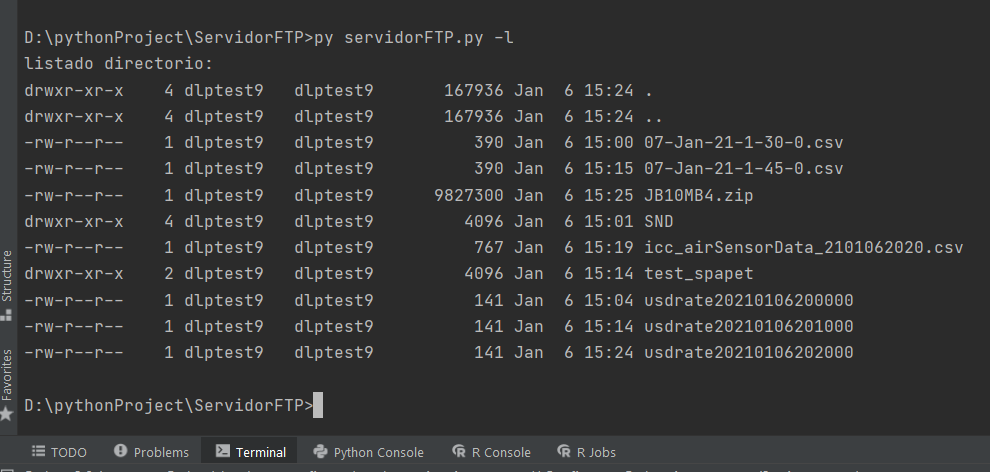
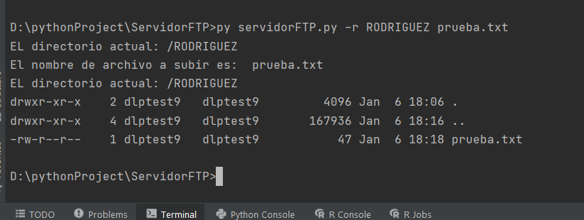
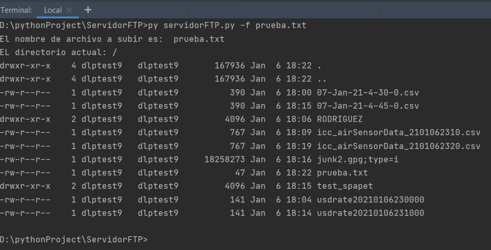
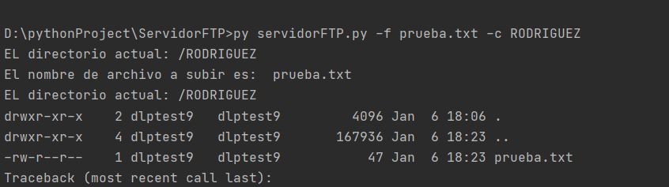
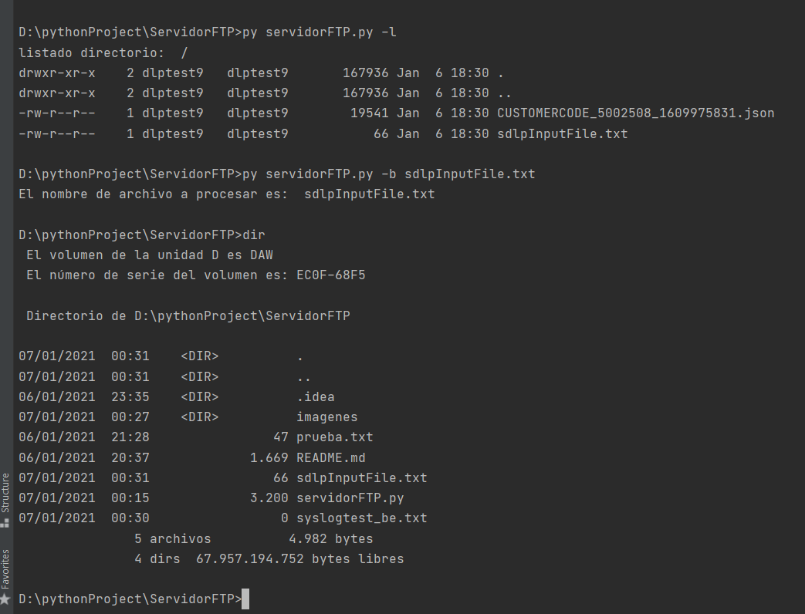

https://github.com/jrodriguezballester/Servidor-FTP.git
Vamos a crear un programa Python que podrá recibir tres parámetros y en función de ellos actuará sobre nuestro servidor FTP.
El primer parámetro será -l, que nos permitirá listar los directorios que tenemos en el servidor FTP.
El segundo parámetro será -d, que nos permitirá crear un directorio en el servidor FTP.
El tercer parámetro será -f, que nos permitirá depositar un fichero en el directorio seleccionado.
Cuando ejecutemos el programa, éste deberá establecer la conexión con nuestro servidor FTP y en función del parámetro que le pasemos, este realizará las acciones descritas anteriormente.
La solución de la práctica será entonces:
Os dejo según la guía de refencia de Python el módulo con el que podéis trabajar para realizar la conexión FTP: ftplib
Uso de parámetros en la llamada a un script: https://www.tutorialspoint.com/python/python_command_line_arguments.htm
Datos para la conexión FTP:
ftp = FTP('macbuighome.no-ip.info')
ftp.login('psp', '265nCwsEzG2Xv6XW')
La conexión al servidor FTP, tiene que ser en modo activo, de otra forma no os funcionará. Documentación sobre el pase de parámetros a un script Python: https://www.tutorialspoint.com/python/python_command_line_arguments.htm
En vez de utilizar el módulo getopt se ha utilizado argsparse https://docs.python.org/3/library/argparse.html entre otras cosas por https://stackoverflow.com/questions/3217673/why-use-argparse-rather-than-optparse
Se ha utilizado un servidor FTP Diferente al pasado en la documentación, por no poder conseguir la conexión; se ha utilizado uno de pruebas https://dlptest.com/ftp-test/ ; los ficheros se destruyen cada 30 minutos; y la contraseña puede cambiar.
Hace un dir del directorio actual del servidor

Nombre del directorio del servidor donde queremos subir nuestro archivo, Nombre del archivo
Sube el archivo del segundo parametro al directorio que le hemos indicado del servidor

sube el archivo al directorio actual del servidor; si se utiliza junto con el parametro -c, --change es similar al parametro -r, --ruta
 
Nombre del archivo a descargar, se puede utilizar con el parametro -c, --change para indicar la ruta

Crea un directorio en el servidor

Cambia al directorio seleccionado. La implementación como opcion independiente se ha comentado, ya que en estos momentos no tiene sentido